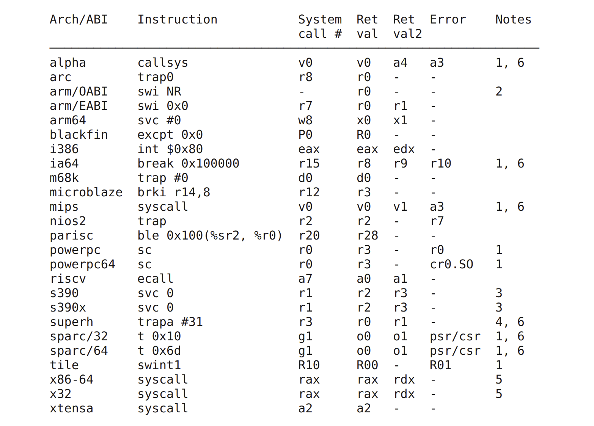
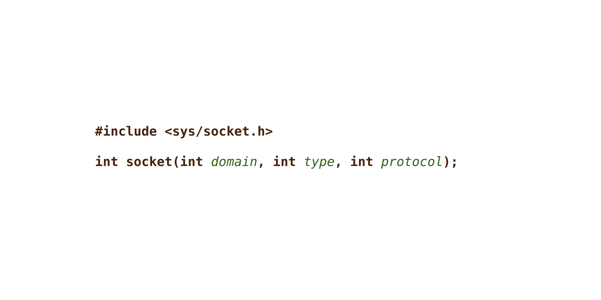
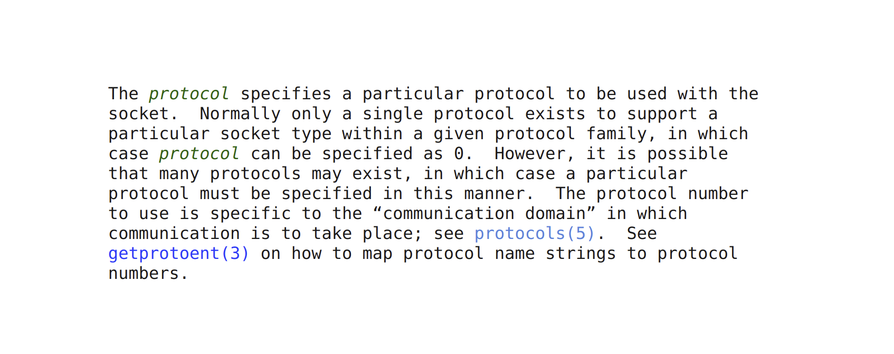

Opening a UDP Socket in RISC-V Assembly
The following is an aggregation of a Twitter thread I posted on April 14th, 2022.
Ever wondered how to open a UDP socket in @risc_v assembly? Wonder no more!
li a0, 2
li a1, 2
li a2, 0
li a7, 198
ecall
Let’s walk through it! 👇🏼🧵
The first thing to understand is that we are just a “normal” program running in user space. We don’t have special privileges in the system, and opening a socket is a privileged operation. In order to accomplish this, we’ll need to “ask” the kernel to do something on our behalf.
Programs in user space can talk to the kernel via system calls.
@risc_v provides the ecall instruction to
communicate from a lower privilege level to a higher one. In this case, we are
communicating from “user mode” to “supervisor mode”. Read more
here.
Issuing an ecall instruction causes a “precise
trap”. The
kernel registers “trap handlers” to respond to different events that cause
traps. In this case, we need to tell the kernel what we need it to do for us.
The kernel supports different syscall “calling conventions” for different architectures. These can be found in the Linux man pages, but here is a summary:

We can see for @risc_v that the system call
(syscall) number needs to be present in argument register 7 (a7). Walking
backwards up our sequence of instructions, you can see we are using the load
immediate
pseudo-instruction
(li) to load 198 into a7.
So how do we know to use 198? We need to look in the kernel! Syscall numbers
are defined in various locations for different architectures; for
@risc_v we can follow include directives from
unistd.h:
arch/riscv/include/asm/unistd.harch/riscv/include/uapi/asm/unistd.hinclude/uapi/asm-generic/unistd.h
If you don’t want to look in kernel source to find the syscall number for a given architecture, you can use this wonderful page from @haerwu that lists syscall numbers for all architectures: link.
Okay, now that we know that 198 corresponds to the socket syscall, we need to
determine what arguments it requires to inform the type of socket (UDP) we want
to open. Back to the man
pages we go!

So we need to provide domain, type, and protocol. Luckily the man page
also defines the options available to us, but we need to map those to the
correct integer values. Specifically we want:
- Domain:
AF_INET - Type:
SOCK_DGRAM - Protocol:
0(default)

AF_INET and SOCK_DGRAM are both defined in socket.h in glibc:
Conveniently, both are defined with the integer 2.
Issuing a syscall is not so different from calling a function in your program as
it requires passing arguments according to a calling convention. We follow the
@risc_v psABI calling
convention
and pass our arguments in the a0, a1, and a2 registers.
Lastly, we need to issue our ecall command. This will cause the hart to jump
to the address defined in the Supervisor Trap Vector
register
(stvec), which is where the kernel has placed the logic to handle different
types of traps.
The kernel will handle our request and return either the file descriptor for the socket, or -1 indicating a failed operation. That’s all for today though! If folks enjoy threads like this, I’ll continue posting as I work on my @risc_v assembly implementation of @quicwg :)